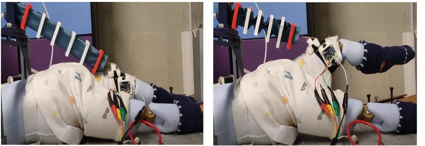
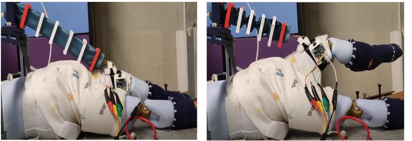

Sergio Cancan
Mechatronics Engineer passionate about robotics, machine learning, and photography.
 

My Journey
What have I done?
Over the past few years, I’ve explored different sides of engineering and creativity — from building soft robots and experimenting with artificial muscles to working on machine learning solutions for real-world applications. I’ve also spent time with photography, capturing places and moments that remind me of balance and simplicity. For me, engineering and art are two ways of understanding the same thing: how systems — mechanical or human — can move, adapt, and express purpose.
Why did I do it?
I’ve always been fascinated by how things work. Whether it’s the motion of a robot or the light in a photograph, I enjoy learning by creating. Curiosity drives me — I like diving deep into challenges and connecting ideas from different fields. I believe that good design comes from empathy and observation, not just equations or code.
What’s next?
I’m continuing to explore robotics, machine learning, and design — but also giving space to creativity and photography. I want to build systems that not only perform well but also feel intuitive and meaningful. If you’d like to collaborate, share ideas, or just talk about technology and art, I’d love to hear from you.
Summary
Diligent and innovative Mechatronics Engineering student at Universidad de Ingeniería y Tecnología (UTEC). Demonstrated skills in high-level engineering challenges, research on vacuum-powered artificial muscles, and API development with machine learning for industrial applications.